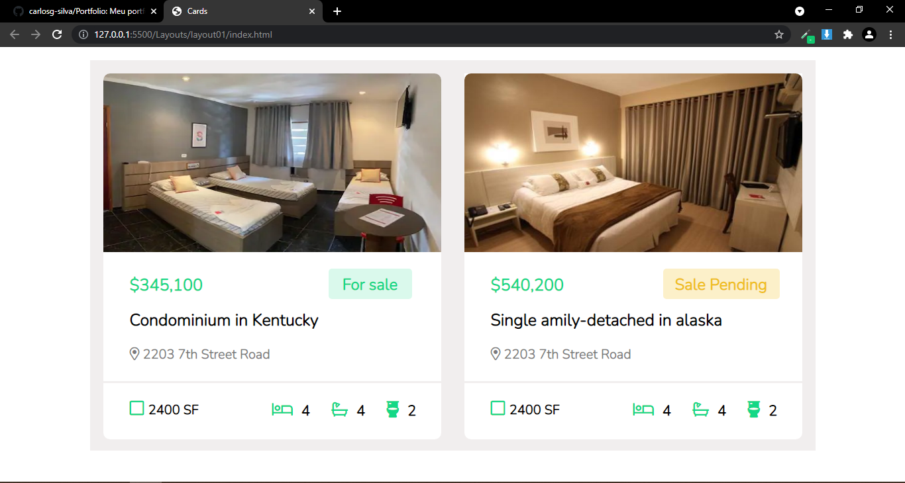
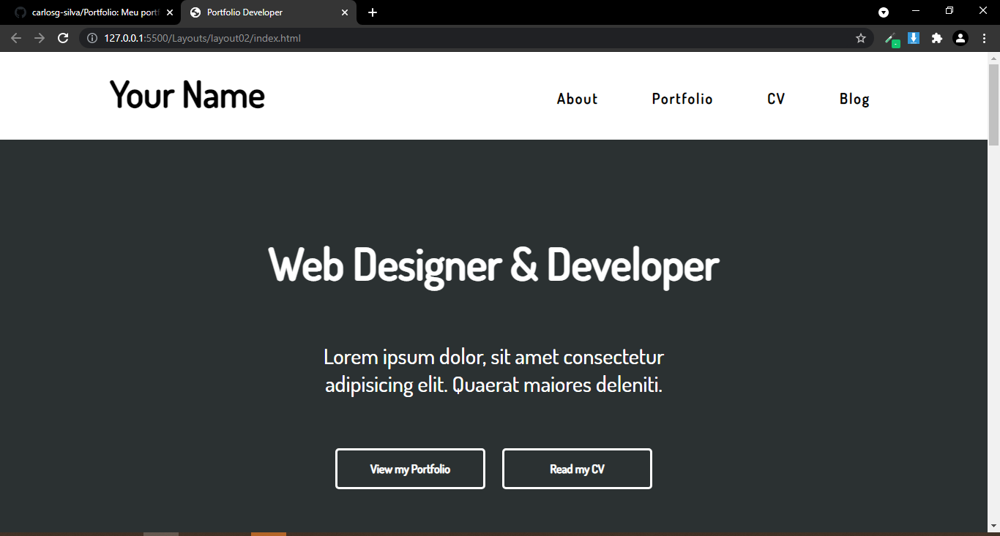
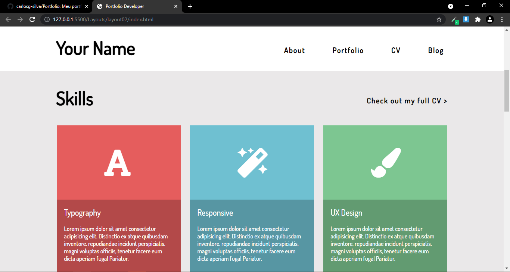
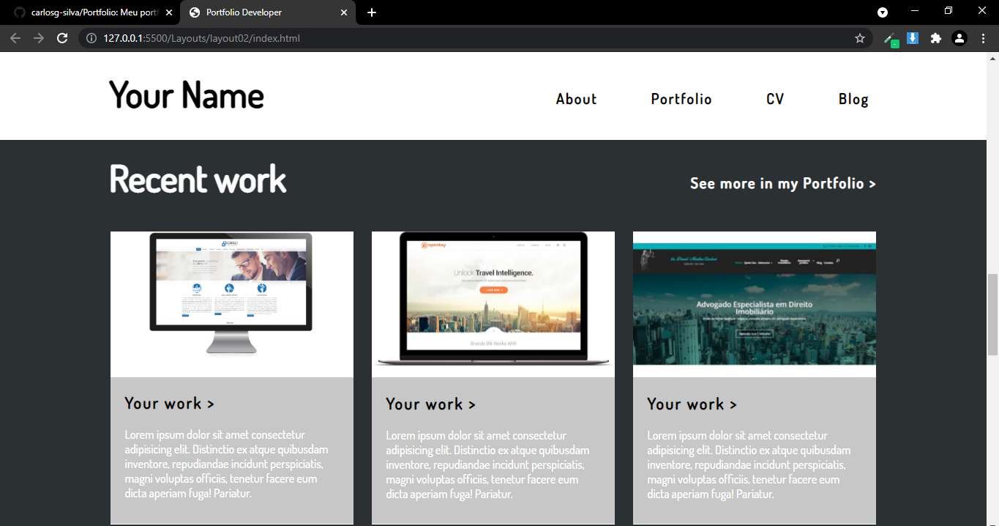
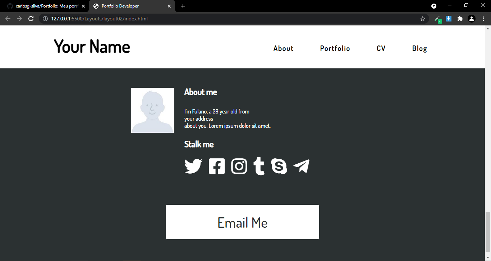

Layouts
Layout de dois cards de um site de venda de imóveis
A proposta desse layout foi praticar através do desenvolvimento de cópias de páginas, tendo como base um print de dois cards de um site de venda de imóveis.
Layout de uma página de portfolio dev.
A proposta desse layout foi o desenvolvimento de uma página de portfólio de desenvolvedor, optei por utilizar inglês como idioma, já que o layout original estava nesse idioma. A imagem utilizada como base para esse layout foi retirada do Pinterest.
Nessa parte do layout eu utilizei ícones para cada card de Skills.
Aqui temos uma área de trabalhos recentes.
Parte final da página, onde seria inserida a foto do Desenvolvedor e demais informações, além de redes sociais e botão para envio de email.
←Voltar ao portfolio